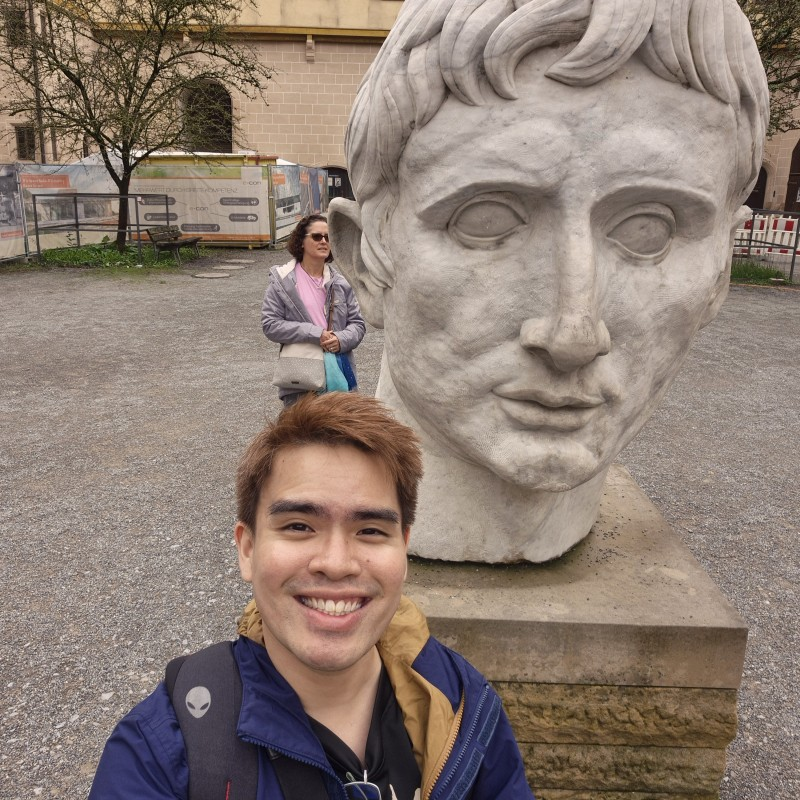

Experienced Full Stack Developer and Technical Lead with over 8 years of software development experience across automotive and banking industries. Currently contributing to Mercedes-Benz Malaysia as a Full Stack Developer and Cluster Pioneer, with focus on in-car applications, Mercedes-Benz App services, Android development, backend integration, and connected vehicle experiences. Recognized for driving technical discussions, establishing engineering standards, mentoring developers, supporting hiring decisions, and aligning technical delivery with Product Owner and stakeholder expectations.
Cluster Pioneer
Serve as Cluster Pioneer, driving cross-cluster technical discussions, collaboration and alignment across development streams.
Mercedes-Benz App | Navigation & Remote Services
Develop and maintain Android and backend solutions for Mercedes-Benz App features within the Navigation and Remote Services domains.
Tips In-Car Application
Build Mercedes-Benz in-car application features that help drivers understand vehicle functionalities through interactive modules, descriptions and instructional videos.
Worked as technical lead and team lead for multiple banking projects, ensuring delivery quality, code quality and solution maintainability.
Developed enterprise applications following Daimler standards and processes, with focus on reusability, efficiency, scalability, reliability and fault tolerance.
Maintained and enhanced existing Java-based systems with focus on stability and supportability.
Provided RESTful services for iOS mobile frontend applications and supported rolled-out systems for Prudential Singapore.
Developed, supported and maintained enterprise applications using Java, Spring RESTful services, SOAP, Oracle SQL, JUnit and related technologies.
Assisted with development environment setup, troubleshooting, design, development, testing and timely status updates.
Contributed suggestions to improve project efficiency and engineering workflow.
Bachelor of Science in Software Engineering
2013 - 2016
First Class Honours · CGPA: 3.82